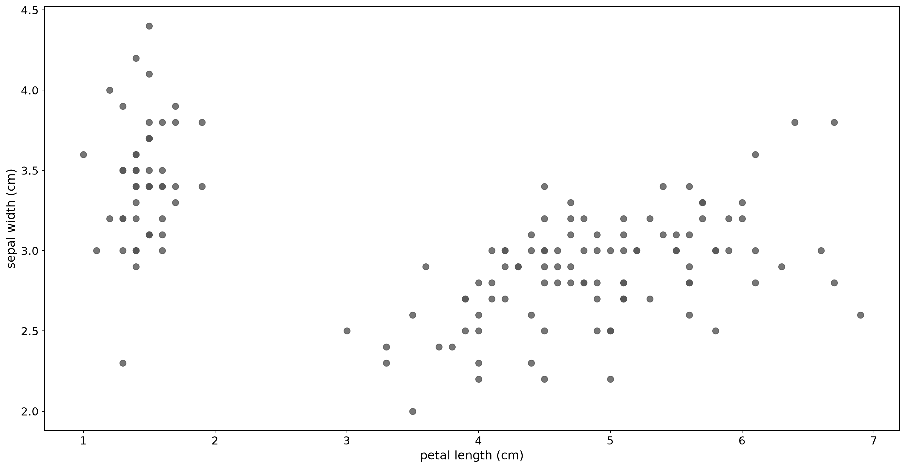
Clustering and Dimensionality Reduction
DS-GA 3001 - Fall 2026
Claudio Silva
NYU Center for Data Science
2026-10-13
Agenda
- Clustering
- Introduction to unsupervised learning
- K-means clustering on IRIS dataset
- DBSCAN and other clustering methods
- Choosing k, dendrograms, and validating clusters
- Dimensionality Reduction
- The manifold hypothesis and intrinsic dimensionality
- Principal Component Analysis (PCA)
- Eigenvectors, eigenvalues, and covariance matrices
- Singular Value Decomposition (SVD)
- Local Linear Embedding (LLE)
- Preview: Non-linear Manifold Learning (t-SNE, UMAP)
Clustering
Etienne Bernard: “… the goal of clustering is to separate a set of examples into groups called clusters”
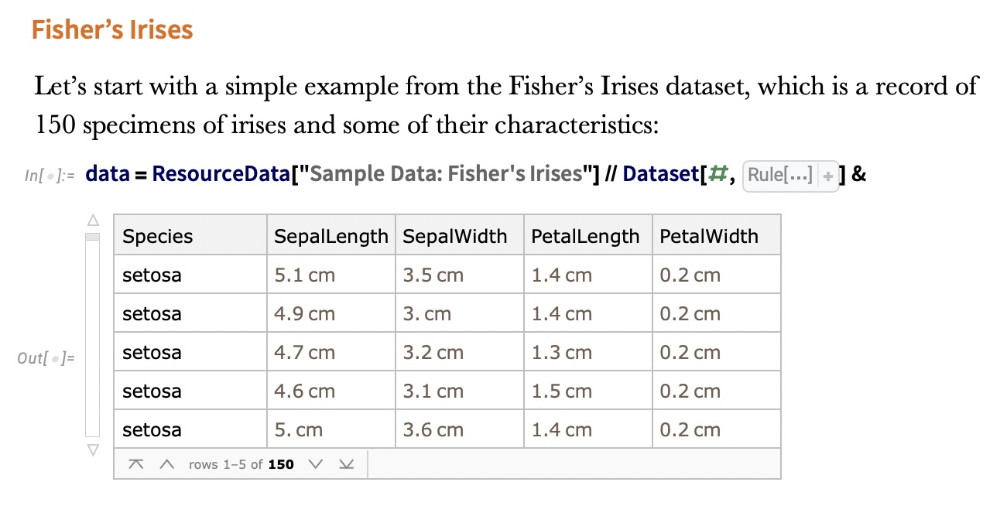
Bernard, E. (2021). Introduction to Machine Learning, ch. Clustering. Wolfram Media.
IRIS
# Code source: Gaël Varoquaux
# Modified for documentation by Jaques Grobler
# License: BSD 3 clause
#
import matplotlib.pyplot as plt
from sklearn import datasets
iris = datasets.load_iris()
_, ax = plt.subplots()
scatter = ax.scatter(iris.data[:, 2], iris.data[:, 1])
ax.set(xlabel=iris.feature_names[2], ylabel=iris.feature_names[1])
_ = ax.legend(
scatter.legend_elements()[0], iris.target_names, loc="lower right", title="Classes"
)IRIS
IRIS – another look
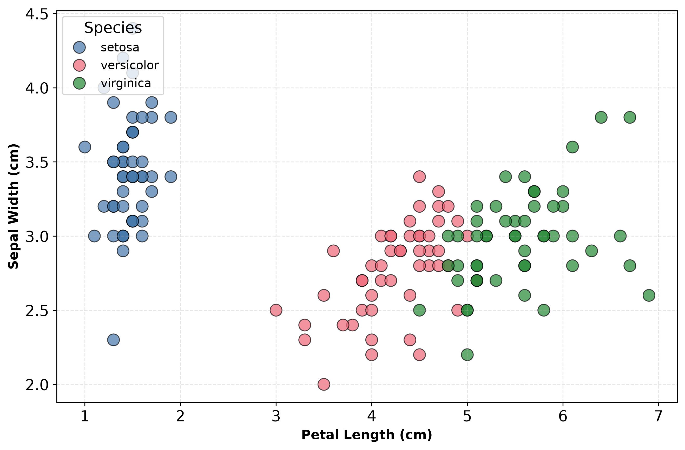
IRIS – clustering
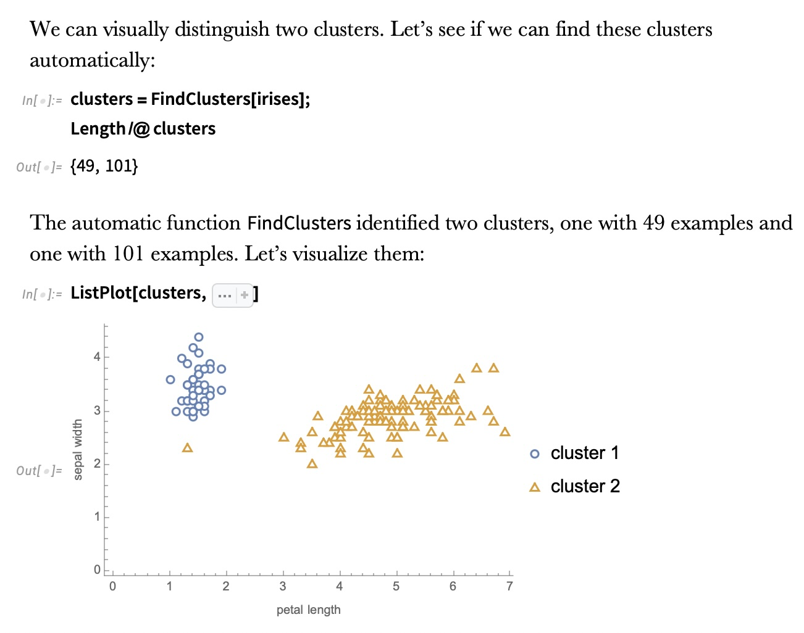
IRIS – k-means
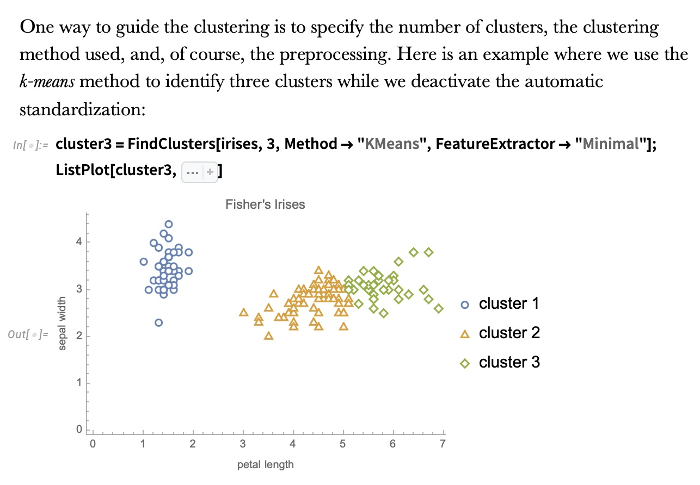
K-means in four lines
- Pick k starting centroids (k-means++ spreads them out)
- Assign each point to its nearest centroid
- Move each centroid to the mean of its assigned points
- Repeat 2–3 until assignments stop changing
Objective: minimize within-cluster sum of squares \(\;\sum_{c=1}^{k} \sum_{x \in C_c} \lVert x - \mu_c \rVert^2\)
Built-in assumptions: k is known · clusters are convex and roughly spherical · similar sizes · feature scale is meaningful
Wolfram Mathematica FindClusters
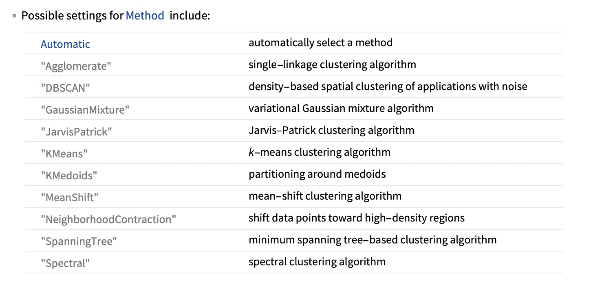
Wolfram Mathematica FindClusters
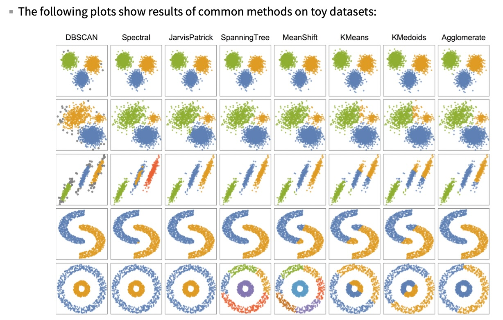
When k-means fails: shape, not count
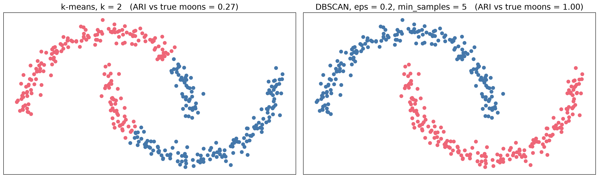
Right number of clusters, wrong definition of a cluster.
IRIS - classes
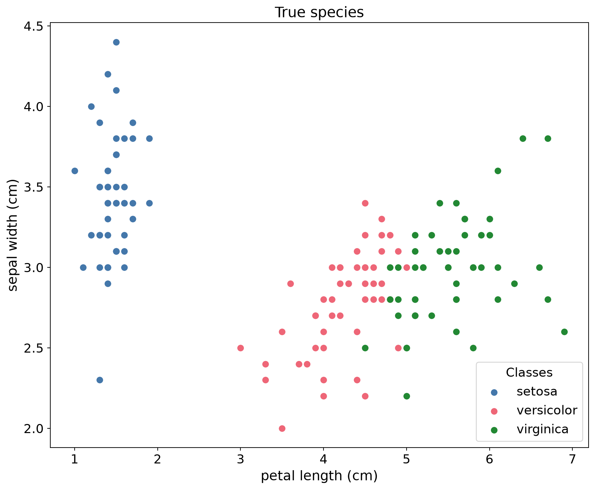
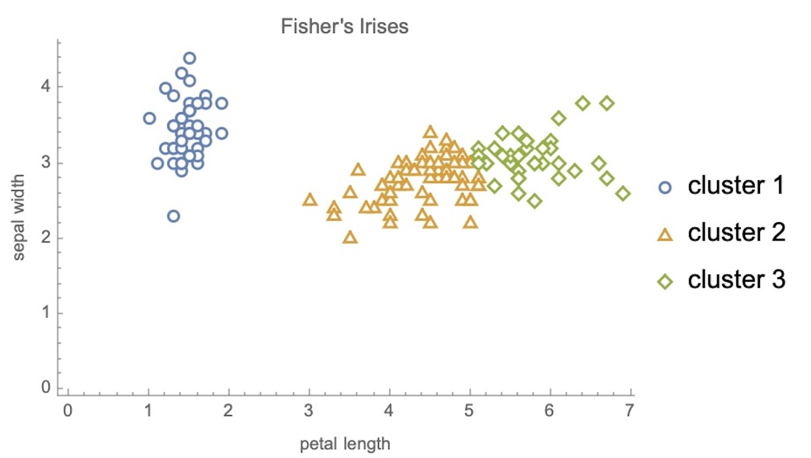
Validating clusters against labels
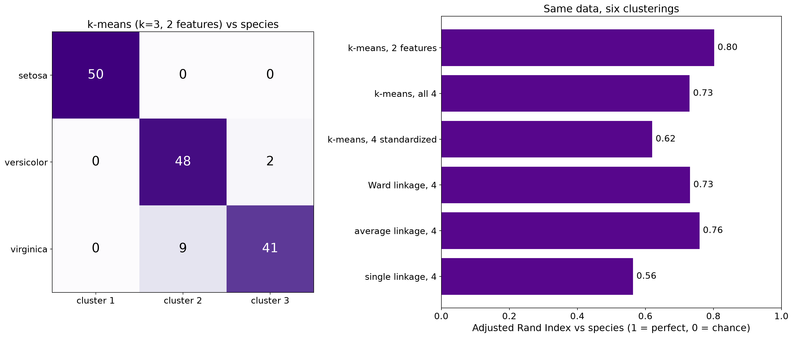
How many clusters? Two criteria, two answers
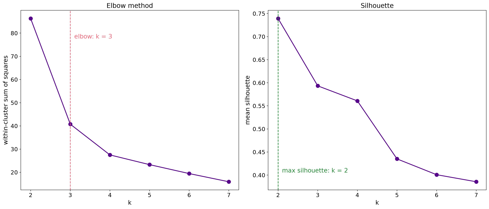
The elbow says 3, the silhouette says 2, the botanist says 3.
Hierarchical clustering: the dendrogram
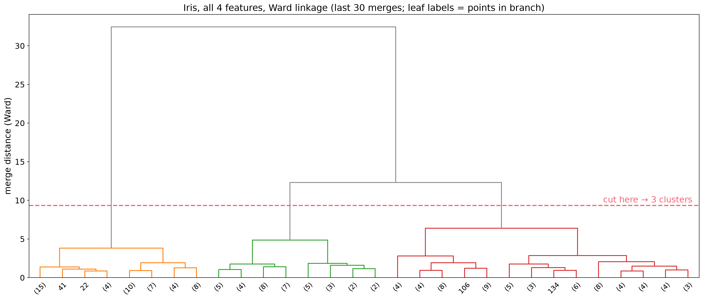
One tree, every k: the cut height is the choice.
Recommended reading
Required: Bernard, Introduction to Machine Learning — Clustering (Wolfram)
Cluster analysis (Wikipedia)
k-means clustering (Wikipedia)
DBSCAN (Wikipedia)
Dimensionality Reduction
Input data may have thousands or millions of dimensions!
Dimensionality Reduction represents data with fewer dimensions
- easier learning – fewer parameters
- visualization – show high-dimensional data in 2D or 3D
- discover “intrinsic dimensionality” of the data
Dimensionality Reduction
Assumption: data lies on a lower dimensional space
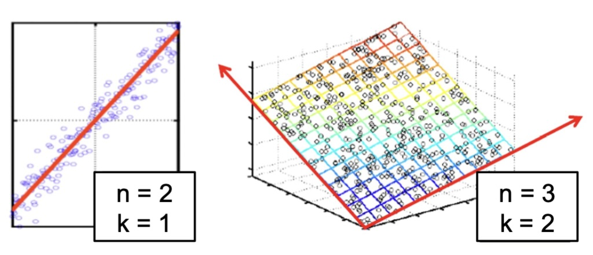
Slides based on material from Prof. Yi Zhang
Visualizing the Manifold Hypothesis: Images of ‘3’ Perturbed by Non-linear Operations
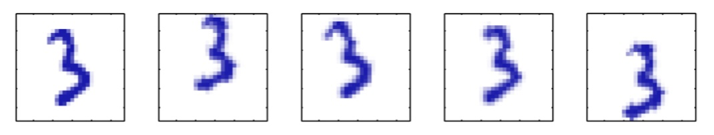
What operations did we perform? What’s the intrinsic dimensionality?
Here the underlying manifold is non-linear
Bishop, C. M. (2006). Pattern Recognition and Machine Learning, §12.1. Springer.
Digits
Digits - 0
array([[ 0., 0., 5., 13., 9., 1., 0., 0.],
[ 0., 0., 13., 15., 10., 15., 5., 0.],
[ 0., 3., 15., 2., 0., 11., 8., 0.],
[ 0., 4., 12., 0., 0., 8., 8., 0.],
[ 0., 5., 8., 0., 0., 9., 8., 0.],
[ 0., 4., 11., 0., 1., 12., 7., 0.],
[ 0., 2., 14., 5., 10., 12., 0., 0.],
[ 0., 0., 6., 13., 10., 0., 0., 0.]])Digits - 1
array([[ 0., 0., 0., 12., 13., 5., 0., 0.],
[ 0., 0., 0., 11., 16., 9., 0., 0.],
[ 0., 0., 3., 15., 16., 6., 0., 0.],
[ 0., 7., 15., 16., 16., 2., 0., 0.],
[ 0., 0., 1., 16., 16., 3., 0., 0.],
[ 0., 0., 1., 16., 16., 6., 0., 0.],
[ 0., 0., 1., 16., 16., 6., 0., 0.],
[ 0., 0., 0., 11., 16., 10., 0., 0.]])Digits
from sklearn.datasets import load_digits
digits = load_digits(n_class=6)
X, y = digits.data, digits.target
n_samples, n_features = X.shape
n_neighbors = 30
import matplotlib.pyplot as plt
fig, axs = plt.subplots(nrows=10, ncols=10, figsize=(8, 8))
for idx, ax in enumerate(axs.ravel()):
ax.imshow(X[idx].reshape((8, 8)), cmap=plt.cm.binary)
ax.axis("off")
_ = fig.suptitle("A selection from the 64-dimensional digits dataset", fontsize=16)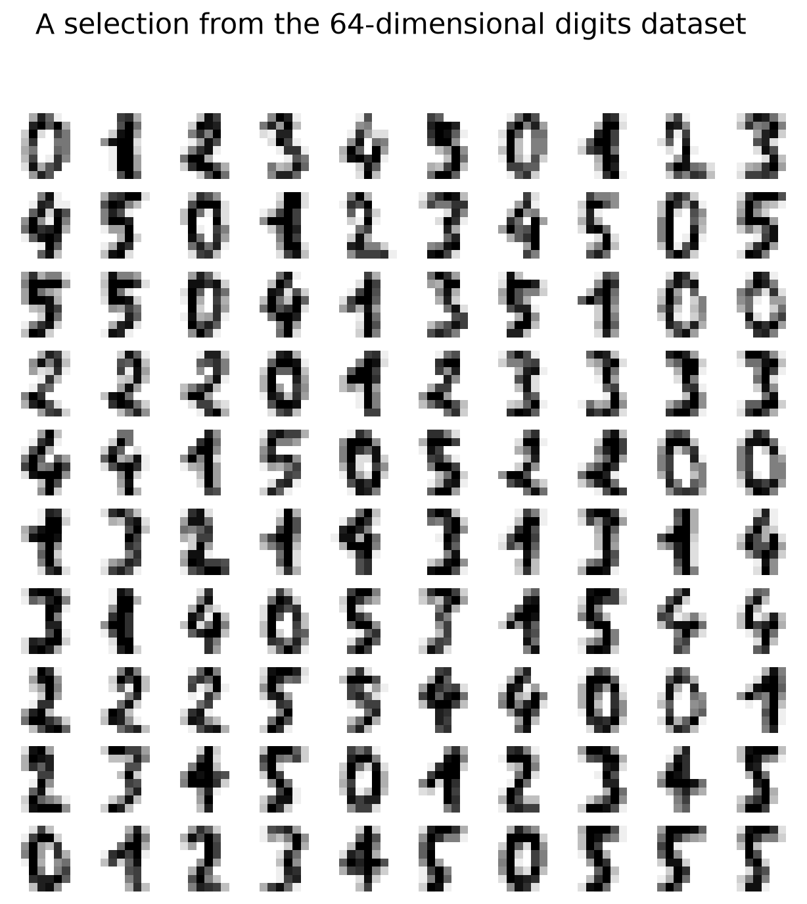
Digits: t-SNE embedding
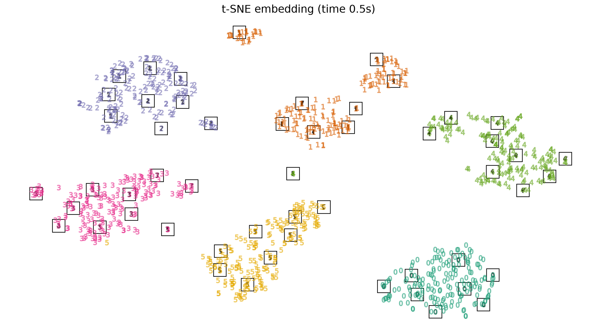
Same digits, six projections
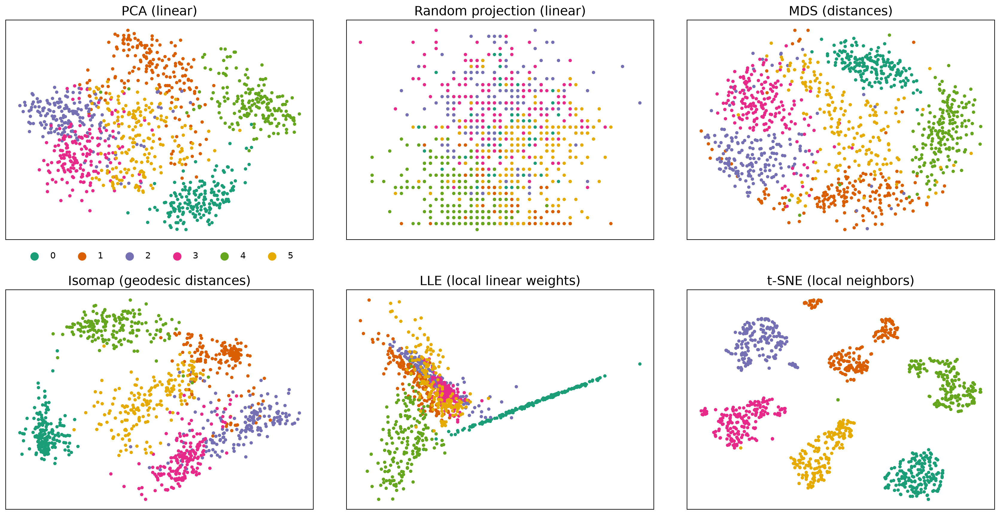
Principal Component Analysis
- PCA is directly related to the eigenvectors and eigenvalues of covariance matrices.
- Lets so make a quick review of eigenvectors, eigenvalues, and covariance matrices.
Slides based on material from Prof. Luis Gustavo Nonato
Eigenvectors and Eigenvalues
Given a \(d \times d\) matrix \(A\), a pair \((\lambda, u)\) that satisfies
\(A u = \lambda u\)
is called eigenvalue \(\lambda\) and corresponding eigenvector \(u\) of \(A\).
Symmetric Matrices
- \(\lambda \in \mathbb{R}\) and \(u \in \mathbb{R}^d\) (no complex numbers involved)
- The eigenvectors are orthogonal
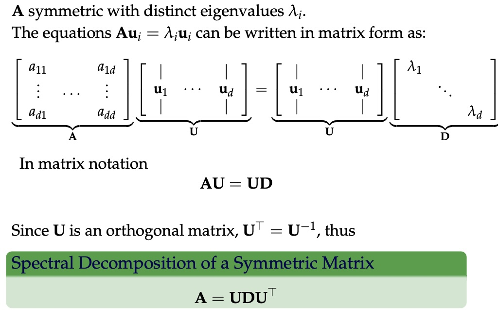
Covariance Matrix
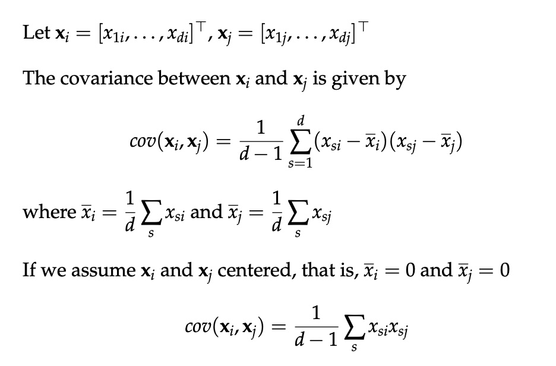
Covariance Matrix
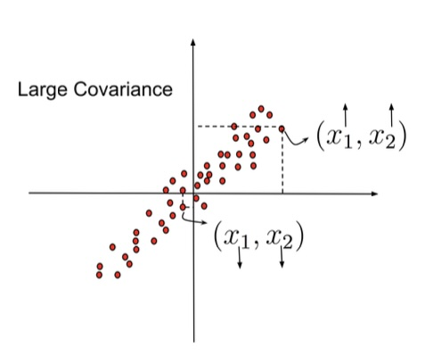
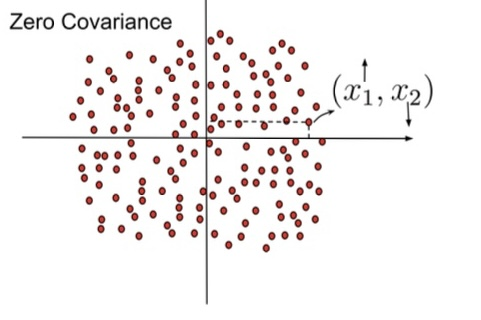
Covariance Matrix
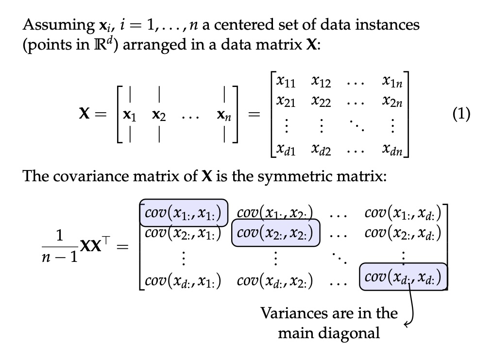
Principal Component Analysis: intuition
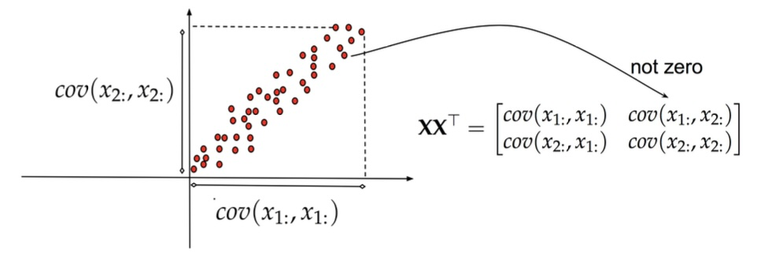
Principal Component Analysis: intuition
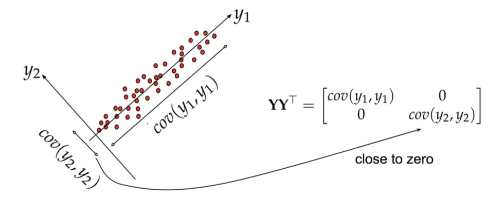
Principal Component Analysis
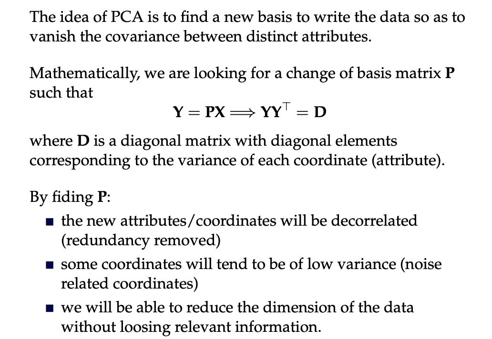
Principal Component Analysis
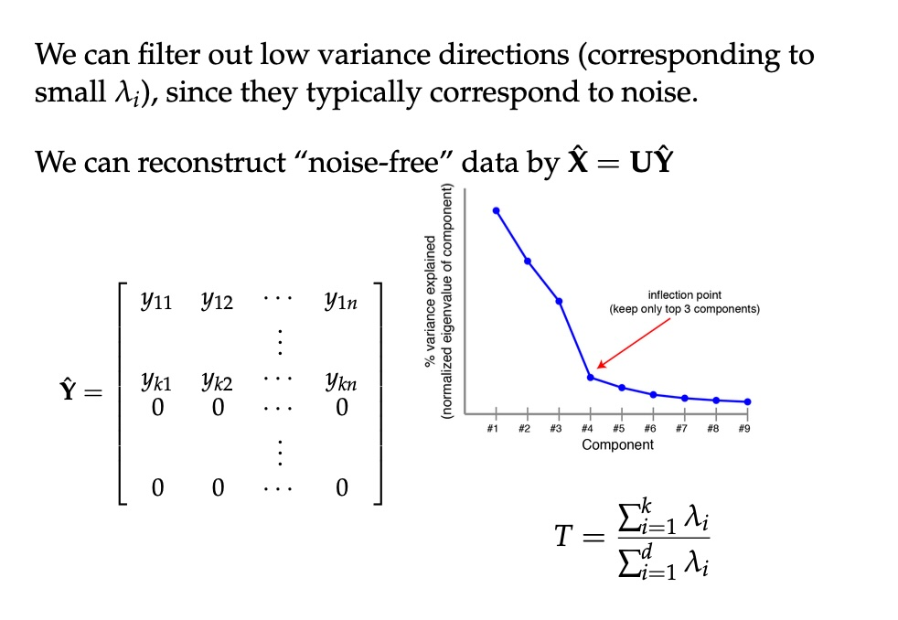
PCA of digits
PCA of digits
Scaling Up
- Covariance matrix can be really big!
- \(\Sigma\) is \(d\) by \(d\)
- 10000 features are not uncommon
- computing eigenvectors is slow…
- Solution: Singular Value Decomposition (SVD)
- Finds the \(k\) largest eigenvectors
- Widely implemented robustly in major packages
Singular Value Decomposition (SVD)
Any matrix, \(M = U \Sigma V^{*}\) — rotate, scale, rotate (Wikipedia)
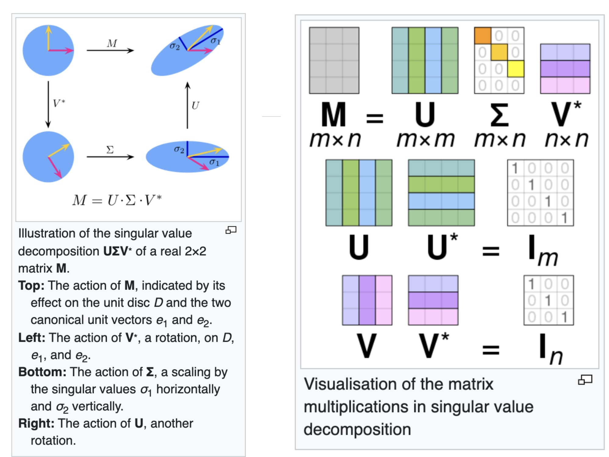
Dimensionality Reduction Techniques
- https://en.wikipedia.org/wiki/Dimensionality_reduction
- Principal component analysis (PCA)
- Non-negative matrix factorization (NMF)
- Linear discriminant analysis (LDA)
- t-SNE
- UMAP
- many others
Local Linear Embedding
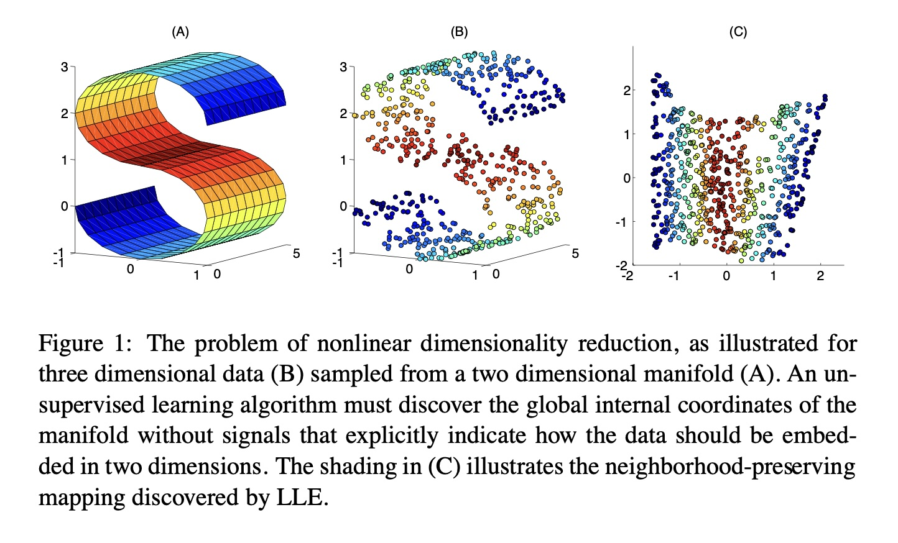
Roweis, S. T. & Saul, L. K. (2000). Nonlinear dimensionality reduction by locally linear embedding. Science 290(5500).
Preserving Local Manifold Neighborhoods
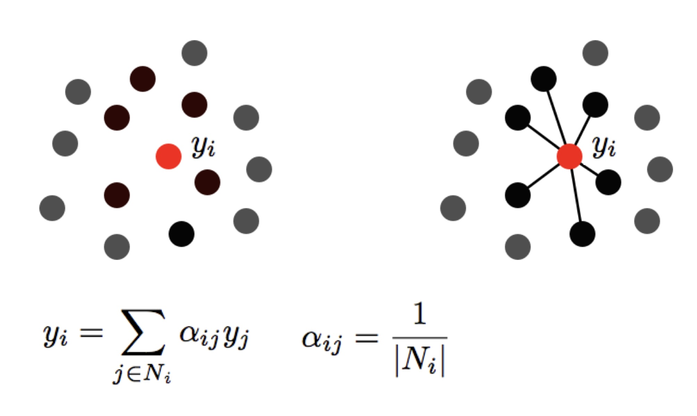
LLE
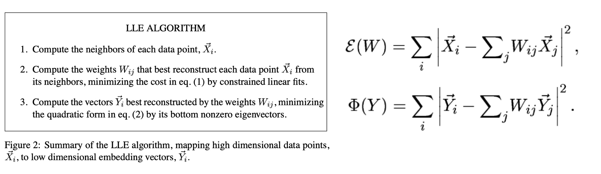
Roweis, S. T. & Saul, L. K. (2000). Nonlinear dimensionality reduction by locally linear embedding. Science 290(5500).
PCA vs LLE
- Images of one face translated across a noisy background: intrinsically 2-D (x and y position)
- PCA (top): folds the sheet; nearby images are not neighbors
- LLE (bottom): recovers a flat grid; corner faces map to corners
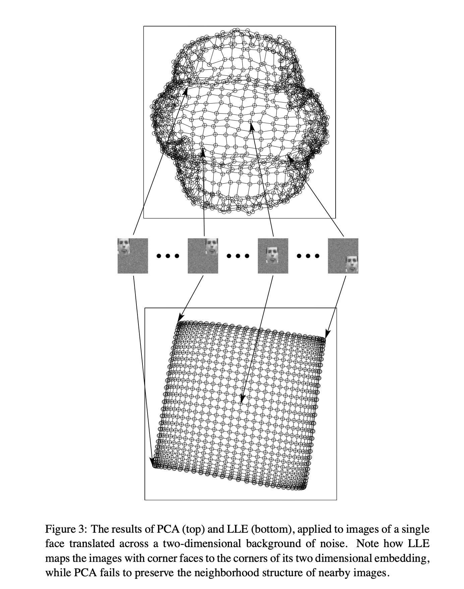
Roweis, S. T. & Saul, L. K. (2000). Nonlinear dimensionality reduction by locally linear embedding. Science 290(5500), Fig. 3.
Beyond PCA: Non-linear Methods
- t-SNE (t-Distributed Stochastic Neighbor Embedding)
- Preserves local neighborhood structure
- Great for visualization of clusters
- Non-linear, adapts to different regions of data
- UMAP (Uniform Manifold Approximation and Projection)
- Faster than t-SNE, scales better
- Better preserves global structure
- Based on topological data analysis
Next Week: Advanced Dimensionality Reduction
Deep dive into t-SNE
- How it works (probability distributions, KL divergence)
- Critical parameters (perplexity)
- Common pitfalls and how to avoid them
UMAP in detail
- Comparison with t-SNE
- Parameter tuning (n_neighbors, min_dist)
Interactive dimensionality reduction
Also: Topomap (topology-preserving layouts) and projection quality metrics
Required reading: Wattenberg, Viégas & Johnson, How to Use t-SNE Effectively (Distill, 2016)
Due Tue Oct 20: project proposal (4 pages)